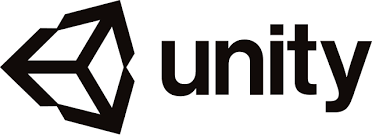

2004년 8월 Unity Technologies가 개발한 게임 엔진. Unity Technologies는 2004년 덴마크 코펜하겐에서 설립되었다. 현재는 미국 샌프란시스코로 본사를 이전했다. 주로 저사양/소규모 게임의 개발에 적합하며, 2005년 6월 8일에 처음 발표되었다.
본래는 어도비 플래시가 한창 잘나가던 시절 플래시로 구현이 힘든 3D 시장 공략을 노린 3D 타겟 웹미디어 제작툴이었다. 초기 유니티 엔진은 멀티플랫폼 중 하나로 브라우저 역시 주력 지원했고, '유니티 웹 플레이어'라는 이름으로 현재까지 남아 있다. 하지만 전문적인 게임엔진에 비해 비교적 단순하고 사용법이 쉽다는 점에 착안한 개발자들이 이를 이용해 게임을 만들기 시작하면서 아예 게임 엔진으로 방향이 선회되었다. 언리얼 엔진의 퍼블리싱 라이선스 옵션 도입 전[14]에는 유니티의 라이선스 비용이 매우 저렴하고, 여타의 고급 엔진들로 대형 프로젝트를 개발하는 것에 비해 단순한 게임들을 만들어 내기에는 비교적 쉬운 편이라서 아이폰을 필두로 한 스마트폰 게임이 새로운 블루오션으로 떠오르던 태동기에 절묘한 타이밍으로 선점하여 모바일에서 승승장구했었다. Shiva3D와 같은 유사한 경쟁자들도 있었으나, 애셋 스토어라는 생태계의 조성에 힘입어 넓은 사용자 풀이 형성되면서 막 모바일 게임 시장이 확장되던 시기에 독보적으로 치고 나아갔다.